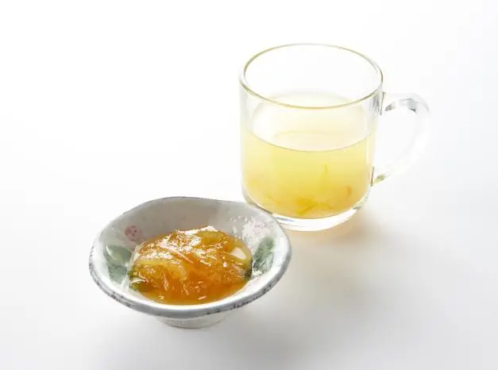
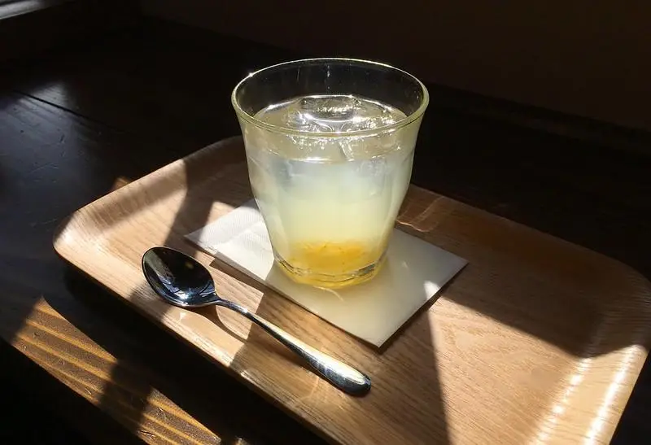

文章 / 飲品配方與資訊
Warm up with yuzu black tea!
這篇是英文原文，尚未完成繁體中文翻譯。中文選單與相關商品連結不會切回英文介面。
查看英文原文（尚未翻譯）
When we enter November and the air starts getting chilly, it’s time to break out the winter clothes, wrap up warm and stay cozy! And nothing spells “cozy” more than a warming cup of tea underneath a fluffy blanket! Since we drink heaps of tea during the cooler months, it’s nice to have a healthy yet delicious option.
This is where yuzu tea steps in!
What is yuzu tea?
Originally a traditional winter drink in Korea, this drink has become popular in Asia as both a warming drink and a healthy treat! In fact, Yuzu is well-known as a great source of vitamin C and A, and is chock-full of antioxidants too.
What makes it so great?
Did you know that yuzu tea is a common house remedy for colds and other illnesses too?. If you’ve caught a cold and is coughing up a storm, this immune-boosting tea is for you! Try a cup to sooth your throat and give your immune system a boost!
The beauty of this tea is not only about its health benefits, but also about its taste and appearance. One sip of this golden-hued drink is bursting with flavour, a perfect mix of sweet and tangy.
This refreshing, vitamin-filled drink will boost your immune system, revitalize your body and soul, and brighten up your day.

With only 2 ingredients needed, it’s very easy to make this at home. Whip up a pot of yuzu tea, crack open your favourite book, and enjoy a warm, soothing night!
Pamper your senses with the intriguing fragrances of the traditional western black tea with a snappy, citrussy twist.
Let’s get started!

How to make Yuzu Infused Black Tea
The perfect combination of classic tea with tart-fruity flavors will bring you a modern tea experience!
What you’ll need
How to make:
Fill the glass with 120ml black tea
Pour in yuzu syrup and stir
Add the ice cubes (if served cold), then add the remaining black tea
Tip: Add a splash of honey for a touch of added sweetness and flair!
Fancy a quick tipple? Add 1 shot of dark rum with honey and cinnamon, and you’ll have a cup of black tea hot toddy. Or spice it up with some rosemary and other spices!
Serve it hot or cold for a seriously soothing pick-me-up any time of the day.
Pick up a bottle of syrup to get started!